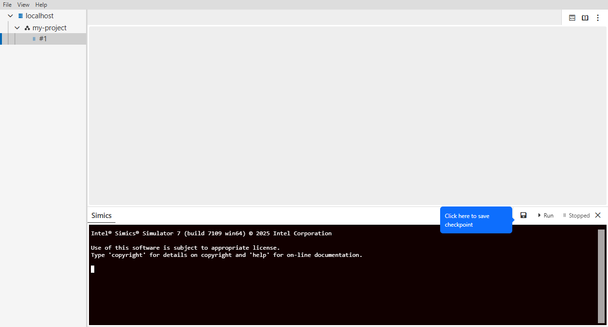
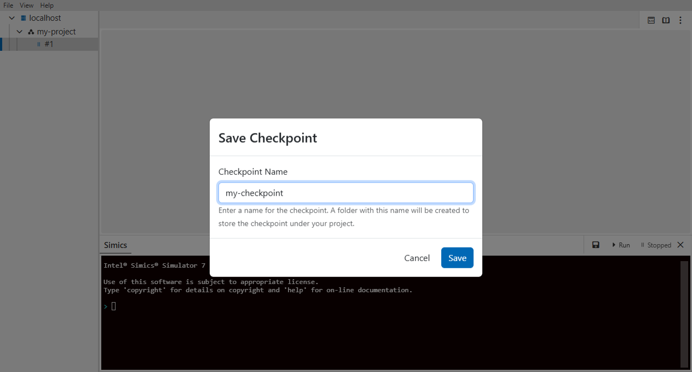
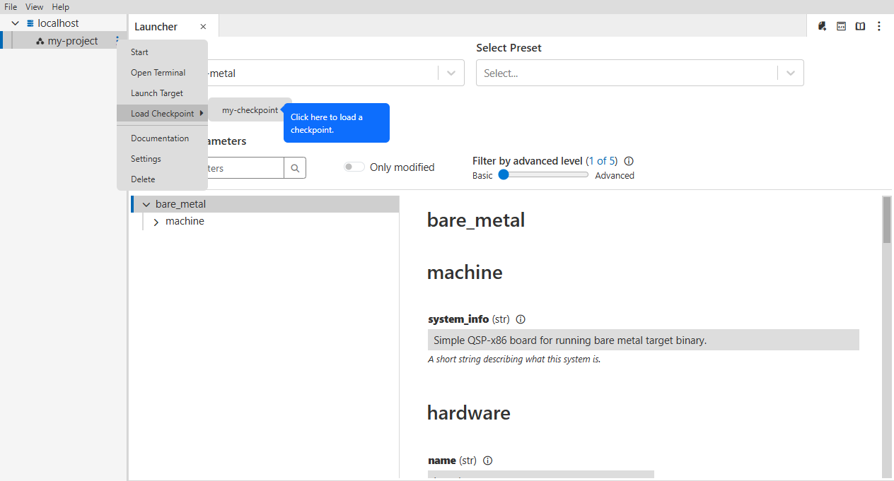

The GUI allows saving the simulation state as a checkpoint to disk.
- Start a simulation
- Stop the simulation
- Click on the "Save" icon.

- Enter a checkpoint name and click "Save". The checkpoint will be saved in the project working directory.

- Click on the three dots on the project.
- Hover over "Load Checkpoint " and click on the saved checkpoint.
